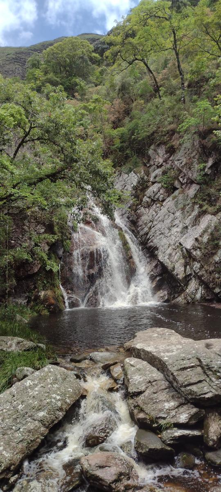

A Lavra ficou como um chamado não atendido — pelo menos, não desta vez. E há algo de muito sábio nisso. Nem todos os caminhos são para agora. Alguns exigem preparo, tempo, maturidade. Senti que aquele encontro ainda não era o momento… mas ficou a sensação de que, quando for, será profundo. Há lugares que nos aguardam — e esse é um deles.